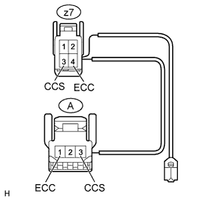
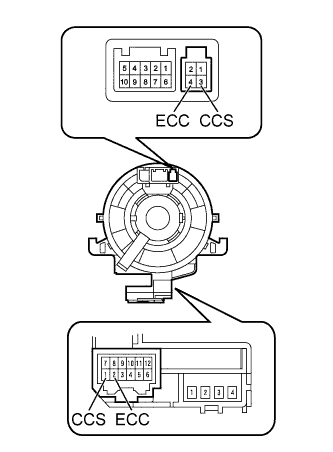

CRUISE CONTROL SYSTEM > Cruise Control Switch Circuit |
| 1.READ VALUE USING INTELLIGENT TESTER (CRUISE CONTROL SWITCH) |
Use the Data List to check if the cruise control switch is functioning properly (Click here).
| Tester Display | Measurement Item/Range | Normal Condition | Diagnostic Note |
| Main SW M-CPU | Cruise control switch (Main CPU) / ON or OFF | ON: Cruise control switch on OFF: Cruise control switch off | - |
| Cancel Switch | CANCEL switch signal / ON or OFF | ON: CANCEL switch on OFF: CANCEL switch off | - |
| SET/COAST Switch | -SET switch signal / ON or OFF | ON: -SET switch on OFF: -SET switch off | - |
| RES/ACC Switch | +RES switch signal / ON or OFF | ON: +RES switch on OFF: +RES switch off | - |
|
| ||||
| OK | ||
| ||
| 2.INSPECT CRUISE CONTROL SWITCH |
Remove the cruise control switch (Click here).
Measure the resistance according to the value(s) in the table below.
| Tester Connection | Switch Condition | Specified Condition |
| 3 (CCS) - 1 (ECC) | Cruise control switch on | Below 2.5 Ω |
| 3 (CCS) - 1 (ECC) | Cruise control switch off | 1 MΩ or higher |
| 3 (CCS) - 1 (ECC) | +RES switch held on | 235 to 245 Ω |
| 3 (CCS) - 1 (ECC) | -SET switch held on | 617 to 643 Ω |
| 3 (CCS) - 1 (ECC) | CANCEL switch held on | 1509 to 1571 Ω |
|
| ||||
| OK | |
| Go to step 5 |
| 3.INSPECT CRUISE CONTROL SWITCH WIRE |
|  |
Disconnect the z7 spiral with sensor cable sub-assembly connector.
Disconnect the A cruise control switch connector.
Measure the resistance according to the value(s) in the table below.
| Tester Connection | Condition | Specified Condition |
| z7-3 (CCS) - A-3 (CCS) | Always | Below 2.5 Ω |
| z7-4 (ECC) - A-1 (ECC) | Always | Below 2.5 Ω |
| z7-3 (CCS) - Body ground | Always | 1 MΩ or higher |
| z7-4 (ECC) - Body ground | Always | 1 MΩ or higher |
|
| ||||
| OK | |
| 4.INSPECT SPIRAL WITH SENSOR CABLE SUB-ASSEMBLY |
Remove the spiral with sensor cable sub-assembly (Click here).
|  |
If there are any defects as follows, replace the spiral with sensor cable sub-assembly with a new one: scratches, cracks, dents or chips on the connector or spiral with sensor cable sub-assembly.
Check the spiral with sensor cable sub-assembly.
Set the spiral with sensor cable sub-assembly to the center position (Click here).
Rotate the spiral with sensor cable sub-assembly 2.5 times clockwise and measure the resistance according to the value(s) in the table below. Then rotate the spiral with sensor cable sub-assembly 5 times counterclockwise and measure the resistance according to the value(s) in the table below.
| Tester Connection | Condition | Specified Condition |
| 3 (CCS) - 1 (CCS) | Always | Below 1 Ω |
| 4 (ECC) - 2 (ECC) | Always | Below 1 Ω |
Set the spiral with sensor cable sub-assembly to the center position and rotate the spiral with sensor cable sub-assembly 2.5 times clockwise. Then, while rotating the spiral with sensor cable sub-assembly 5 times counterclockwise, measure the resistance according to the value(s) in the table below.
| Tester Connection | Condition | Specified Condition |
| 3 (CCS) - 1 (CCS) | Always | Below 1 Ω |
| 4 (ECC) - 2 (ECC) | Always | Below 1 Ω |
|
| ||||
| OK | |
| Go to step 3 |
| 5.CHECK HARNESS AND CONNECTOR (SPIRAL WITH SENSOR CABLE SUB-ASSEMBLY - ECM AND BODY GROUND) |
Disconnect the G28 spiral with sensor cable sub-assembly connector.
Disconnect the G45 ECM connector.
Measure the resistance according to the value(s) in the table below.
| Tester Connection | Condition | Specified Condition |
| G28-1 (CCS) - G45-11 (CCS) | Always | Below 1 Ω |
| G28-2 (ECC) - Body ground | Always | Below 1 Ω |
| G28-1 (CCS) - Body ground | Always | 10 kΩ or higher |
|
| ||||
| OK | ||
| ||